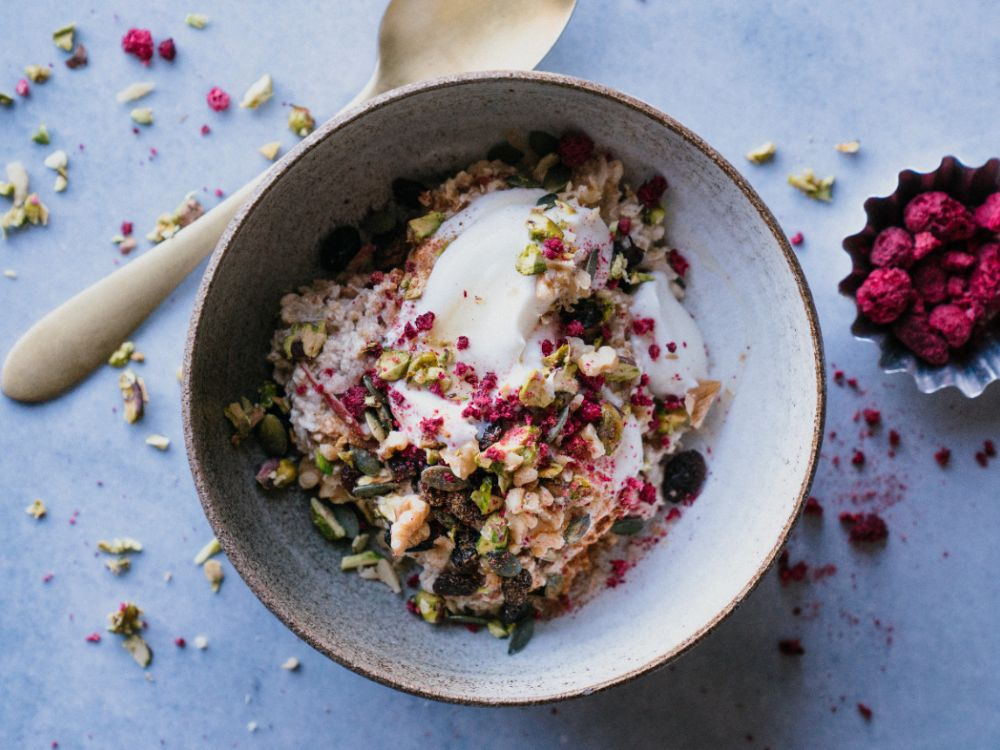

Havregrynsgröt
Havregrynsgröt är en näringsrik och enkel frukost. Den är perfekt för att starta dagen med en bra blandning av kolhydrater och fiber!
Ingredienser
- 1 dl havregryn
- 2 dl mjölk eller vatten
- 1 msk honung
- 1 banan
- 1 tsk kanel
Tillagning
- Koka upp havregrynen med mjölken i en kastrull. Låt sjuda i ca 5 minuter.
- Rör om då och då för att undvika att gröten bränner fast.
- När gröten är klar, ta bort från värmen och tillsätt honung, bananskivor och kanel.
- Servera varm och njut!
